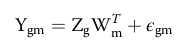

Introduction to MOFA
MOFA+
MOFA explanation mostly adapted from Argelaguet et al 2020, since the way they explain it is already the most paraphrased and understandble way of explaining it.
MOFA is a statistical method for integrating multiple modalities of omics data in an unsupervised manner. Intuitively, MOFA can be viewed as a versatile and statistically rigorous generalization of principal component analysis (PCA) to work with multi‐omics data. Given several data matrices with measurements of multiple omics data types on the same or on partially overlapping sets of samples, MOFA infers an interpretable low‐dimensional data representation in terms of (hidden) factors. These learnt factors capture major sources of variation across data modalities, thus facilitating the identification of continuous molecular gradients or discrete subgroups of samples. The inferred factor loadings can be sparse, thereby facilitating the linkage between the factors and the most relevant molecular features. Importantly, MOFA disentangles to what extent each factor is unique to a single data modality or is manifested in multiple modalities, thereby revealing shared axes of variation between the different omics layers. Once trained, the model output can be used for a range of downstream analyses, including visualization, clustering and classification of samples in the low‐dimensional space(s) spanned by the factors, as well as the automated annotation of factors using (gene set) enrichment analysis, the identification of outlier samples and the imputation of missing values.
More technically, MOFA is built upon the statistical framework of group Factor Analysis, adapted to the requirements of multi‐omics studies: fast inference based on a variational approximation (using a stochastic variant of mean-field variational Bayes), inference of sparse solutions facilitating interpretation, efficient handling of missing values and flexible combination of different likelihood models for each data modality, which enables integrating diverse data types such as binary‐, count‐ and continuous‐valued data. The underlying master equation is the standard matrix factorization framework:

Where: Ygm is the matrix of observations (for the m-th modality and the g-th group), Wm is the weight matrix for the m-th modality, Zg is the factor matrix for the g-th group and εgm is the residual noise for the m-th modality and g-th group.
Each of the inferred factors (Z) ordinates cells along a one-dimensional axis centered at zero. The values are not important per se, but the relative position is. Samples with different signs manifest opposite effects along the inferred axis of variation, with higher absolute value indicating a stronger effect (analogous to PCA). The weights provide a score for how strong each feature relates to each factor, allowing a direct biological interpretation of the latent factors.

Image taken from MOFA2 webpage